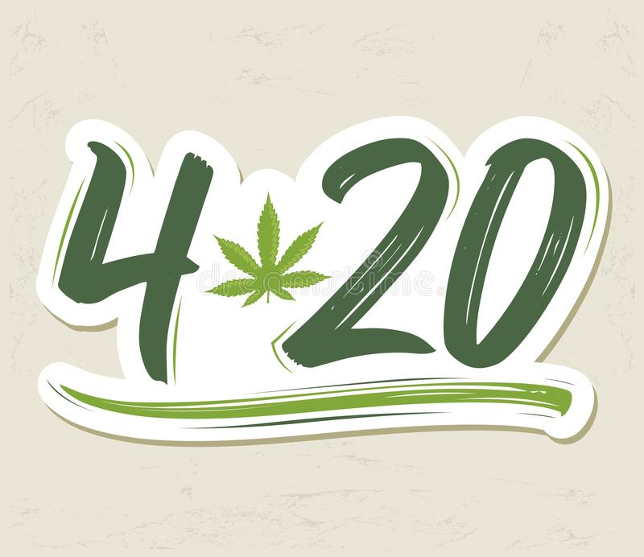
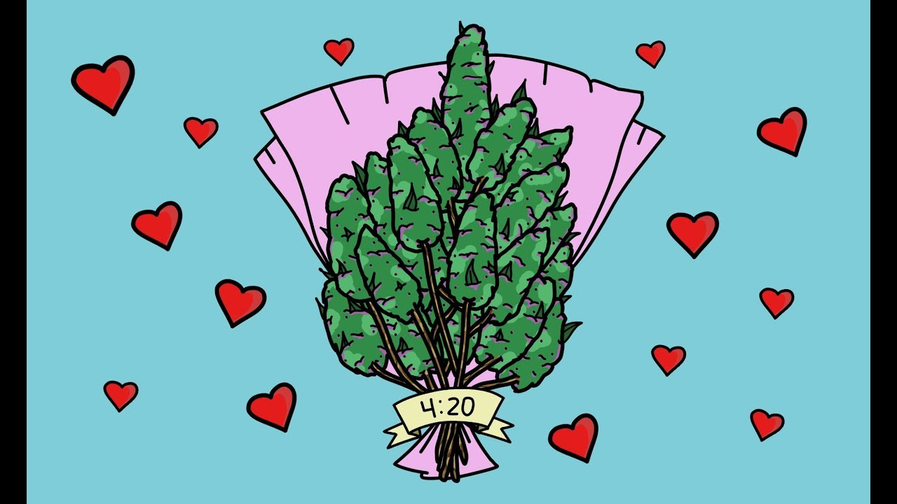

Feliz 420
Día mundial de 4/20
Para muchos es más que un "codigo" o "slang", es una filosofia, un estilo de vida, un "afrodisiaco" muy común en los app de ligue y hasta una religión. Puede significar desde una invitación, un sinónimo. 420 es la "hora feliz" literalmente.